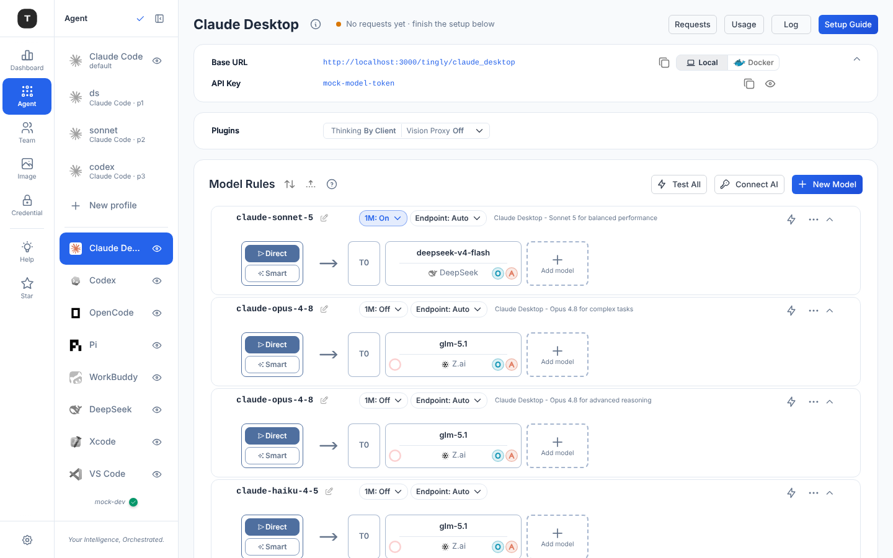

1 · Agent 页现状（Claude Desktop）
真实截图。把注意力放在三处：左边两个实心蓝块、中间的卡片嵌套、四条几乎一样的路由图。

读图
• 实心蓝在 rail、sidebar、Setup guide、New Model 四处，选中与主操作无法区分。
• 页面卡 → 规则卡 → 路由图盒子 → 虚线占位框，四层边框。
• 四条规则的路由图形态相同，glm-5.1 重复三次。浏览时看不出差别，编辑时才需要图。
• 头部 Requests / Usage / Log 是三个外观一样、行为不同的按钮（上一轮 A12）。